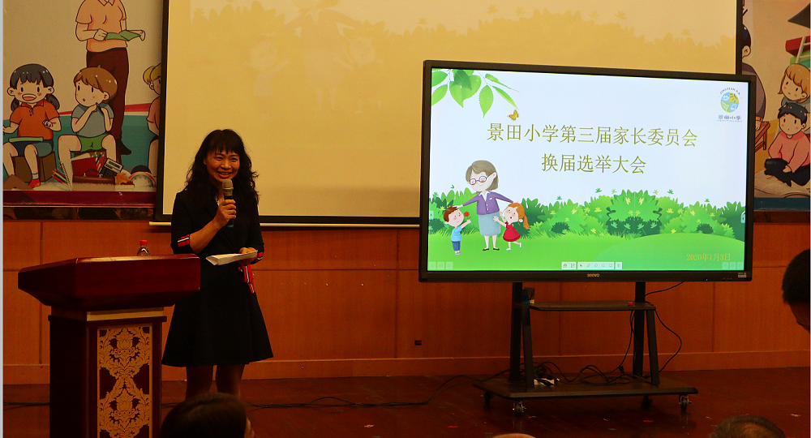
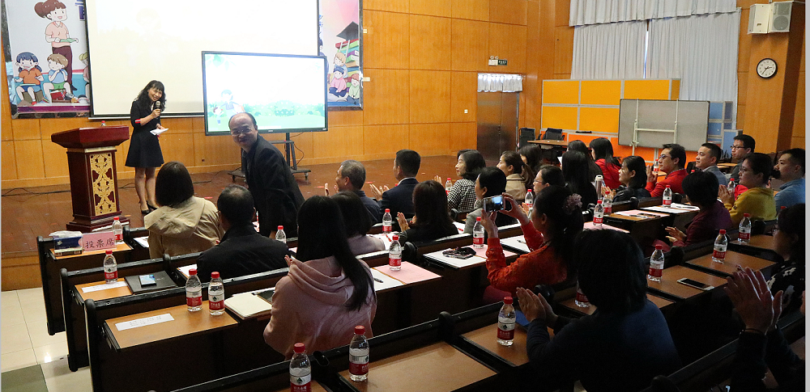
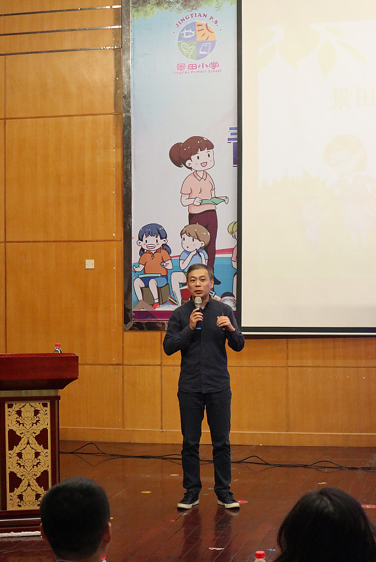
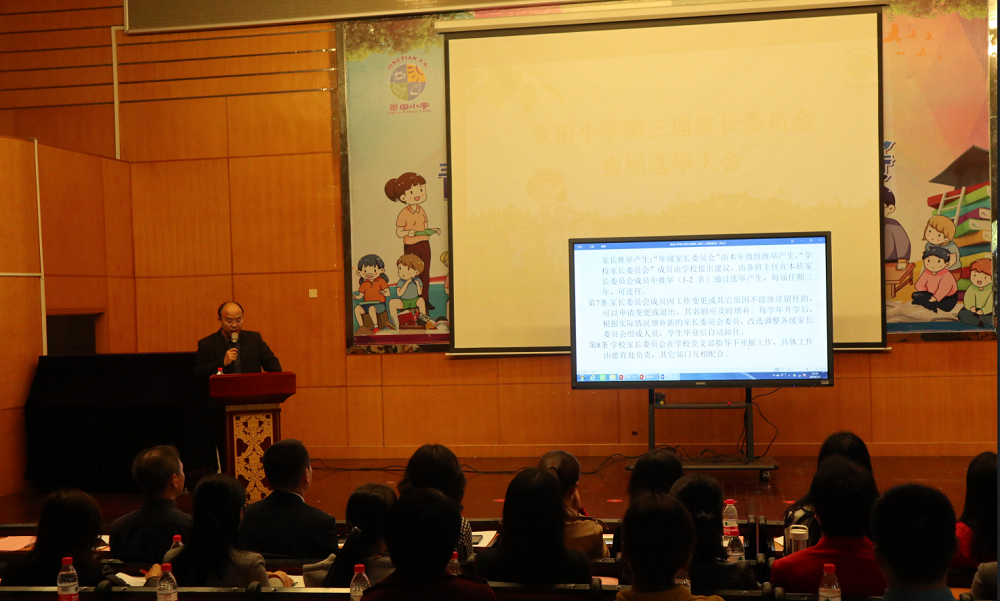
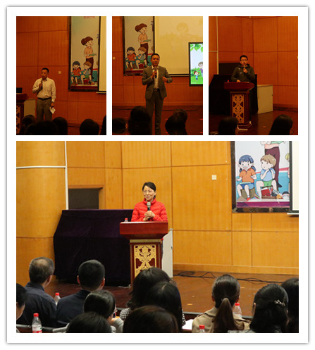
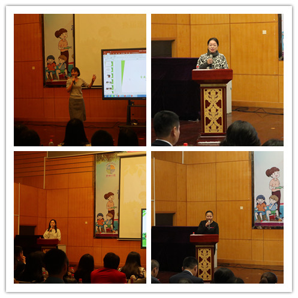
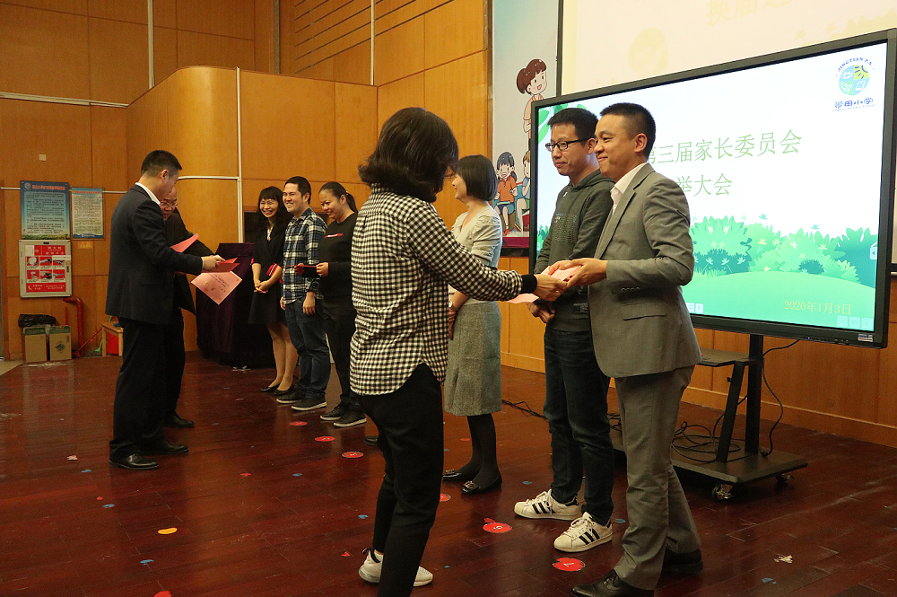
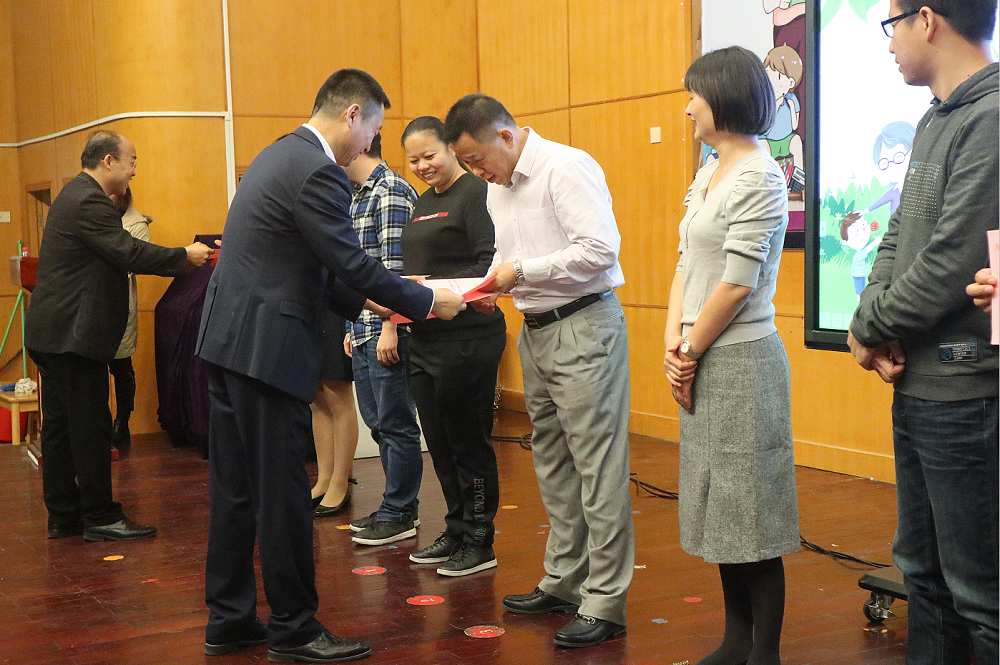
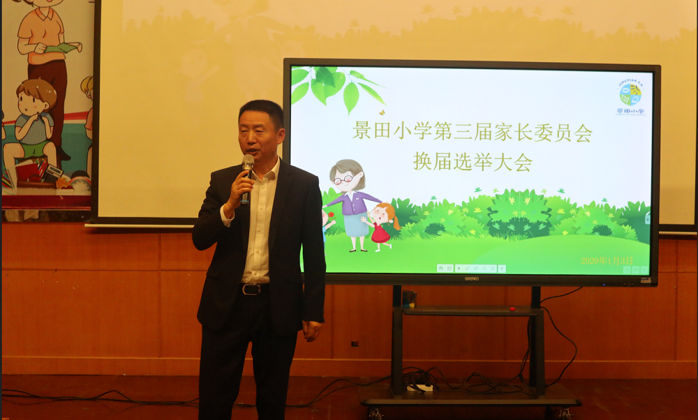
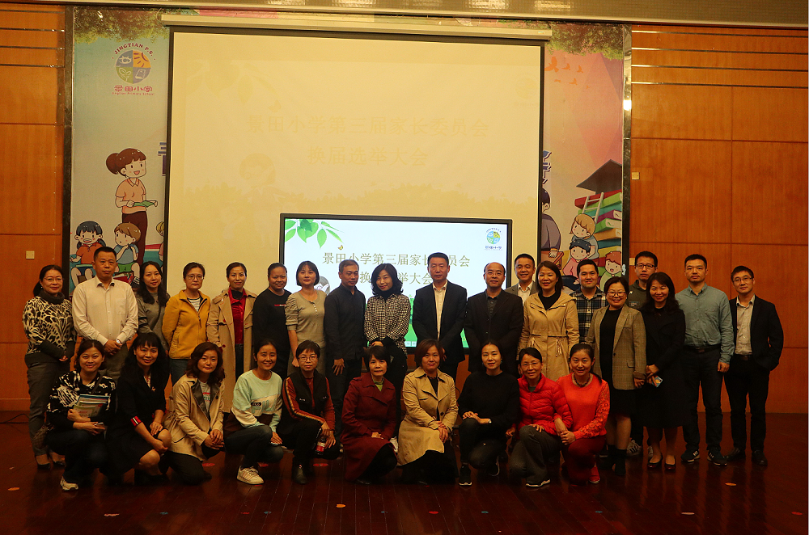

——蒲城县北关小学-蒲城县桥山中学举行第三届家长委员会选举会议
为进一步做好学校各项工作，促进学校与家庭、教师与家长的交流沟通，更好地形成学校、家庭、社会三位一体的教育网络。2020年1月3日下午2:30，蒲城县北关小学-蒲城县桥山中学第三届家长委会选举会议在三楼阶梯教室隆重举行。部分学校领导、第二届家委常委成员、优秀家长义工代表、一至四年级20个班的家长代表及学校代表参加了本次会议。
本次选举大会由第二届家委常委孙文英女士主持。她介绍了参加本次选举大会的与会人员和有关选举的事项。


第二届家委会贾永华主任对上届工作做了详细的总结。

张旅副校长宣读了《蒲城县北关小学-蒲城县桥山中学家委会章程》，全体与会人员审议并举手表决通过了该《章程》。

会上，17位候选家长分别进行了3分钟的自我介绍与竞选演讲。


通过票选产生了蒲城县北关小学-蒲城县桥山中学第三届家长委员会：
家委主任：朱灵凤
家委常委：刘力、于杰、田野、岳剑、谢井梅、孙文英
校领导为7位新一届家委成员颁发聘书。


张也校长最后的讲话表达了对各位家长的“感谢和感恩”、提出了“思考和责任”，寄予了“期许和希望”。并提出三点要求：1.充分利用好“家长学校”这一平台，提供切实有用的育儿理念，转变部分家长的教育观念和方法，缓解焦虑情绪；2.成立“专门的”家长委员会，辅助活动开展，做好各方面协调，为学校的宣传工作添砖加瓦；3.通过校家委这一窗口，学校能得到更多家长的理解、支持与帮助。张也校长引用了习总书记的新年贺词与全体教师和家长共勉：让我们只争朝夕，不负韶华，共同迎接2020年的到来!

会议在大家的合影留念中圆满完成。

新一届校家委的成立，意味着家校教育更加的求真务实，标志着我校德育教育网络更加的完善。蒲城县北关小学-蒲城县桥山中学的教师将和家长齐心协力，以学校为龙头，以家庭为基础，以社会为平台，携手创造蒲城县北关小学-蒲城县桥山中学新的辉煌！
文：魏昕云 伍继林
摄影：郑小鹏